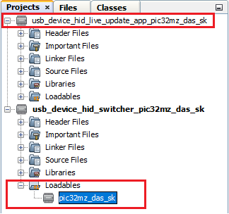
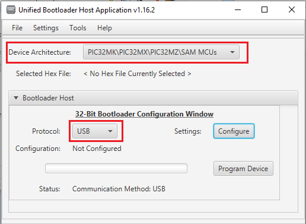
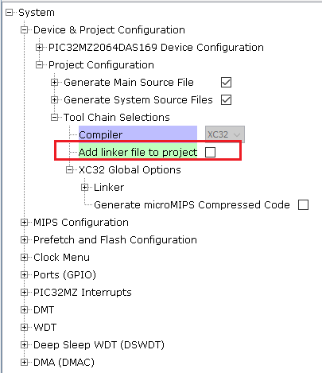
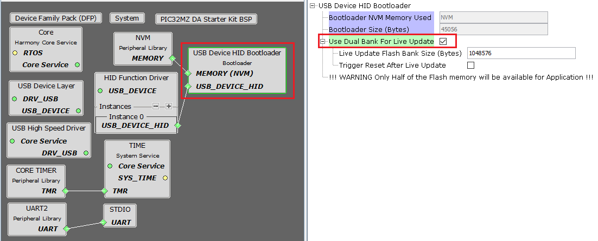
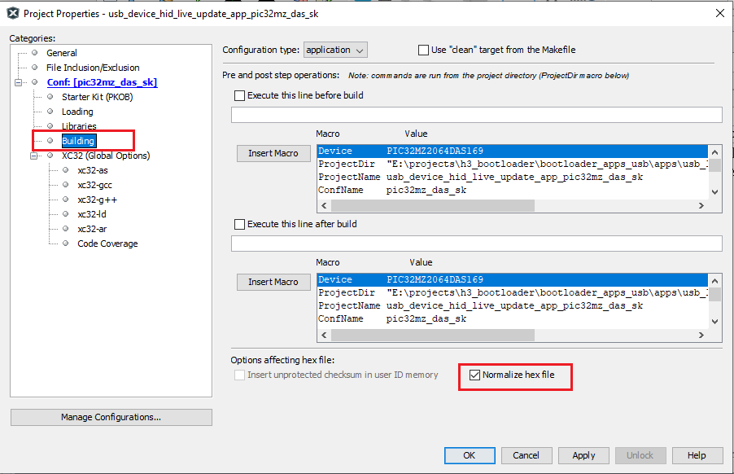

Building and Running the USB Live Update applications
Downloading and building the application
To clone or download these application from Github,go to the main page of this repository and then click Clone button to clone this repo or download as zip file. This content can also be download using content manager by following these instructions
Path of the application within the repository is apps/usb_live_update/
To build the application, refer to the following table and open the project using its IDE.
Switcher Application
| Project Name | Description |
|---|---|
| switcher/firmware/pic32mz_das_sk.X | MPLABX Project for PIC32MZ Embedded Graphics with Stacked DRAM (DA) Starter Kit (Crypto) |
Live Update Application
| Project Name | Description |
|---|---|
| live_update_app/firmware/pic32mz_das_sk.X | MPLABX Project for PIC32MZ Embedded Graphics with Stacked DRAM (DA) Starter Kit (Crypto) |
Setting up PIC32MZ Embedded Graphics with Stacked DRAM (DA) Starter Kit (Crypto)
-
Connect a micro USB cable to the UART-USB port J5
-
For programming, connect a micro USB cable to the USB Debug port J19
-
Use the micro-A/B port J6 (which is located on the bottom side of the board) to connect the USB Device to the USB Host PC
Running the Application
-
Open the switcher application project switcher/firmware/pic32mz_das_sk.X in the IDE
- Make sure that the live_update_app/firmware/pic32mz_das_sk.X is added as a loadable project to switcher application
- As the Switcher application does not have any programming capabilities, Adding the live_update_app as loadable allows MPLAB X to create a unified hex file and program both these application in thier respective memory location based on the respective linker scripts

- Open the Terminal application (Ex.:Tera Term) on the computer to get live update application messages through UART once loaded
- Configure the serial port settings as follows:
- Baud : 115200
- Data : 8 Bits
- Parity : None
- Stop : 1 Bit
- Flow Control : None
-
Build and program the switcher application using the IDE
- LED3 should start blinking once programming is completed and below message has to be displayed on the Console
- You can see how the live update application was loaded in BANK 1 by IDE and switcher application jumped BANK 1 to run it
- HID Custom device with product ID 3C will be enumerated on Host PC

- Launch the Unified Host application from below path
- <harmony3_path>/bootloader/tools/UnifiedHost-*/UnifiedHost-*.jar
- Configure the Unified host application
-
Select the Device architecture and Protocol as shown below

-
Click on configure button and select the USB Device as 3C

- Load the live update application hex file to be programmed using below option
- <harmony3_path>/bootloader_apps_usb/apps/usb_live_update/live_update_app/firmware/pic32mz_das_sk.X/dist/pic32mz_das_sk/production/pic32mz_das_sk.X.production.hex

-
Open the Console window of the host application to view application bootloading sequence

-
- Click on Program Device button to program the loaded live update application hex file on to the device
- You can note that throughout the programming sequence and after programming the LED3 will be blinking as the application task is running along with bootloader task (Live Update Feature)

- Following snapshot shows output of successfully programming the test application
- Ignore the Device Reset Messages from the host tool. The live update application ignores the reset command received and waits for a switch press to update serial number and reset

- Press the Switch SW1 to update serial of Inactive Bank and trigger reset. You should see below output on success
- This step shows that the new firmware programmed in BANK 2 is running which is mapped to lower region by switcher at reset

- Repeat Steps 9-11 for further updates and observe the Banks from which application is running at every update
Configurations to be Noted
Switcher Application
- As we are using custom linker script for Switcher, the default linker file generation has to be disabled

Live Update Application
- Enable Live Update Option to configure USB Device HID bootloader in Live Update Mode

- Normalize hex file:
- Check the Normalize hex file option as shown below, as the Unified bootloader host application takes hex file as an input. Normalizing the hex file will make sure the data in the hex file is arranged sequentially.
